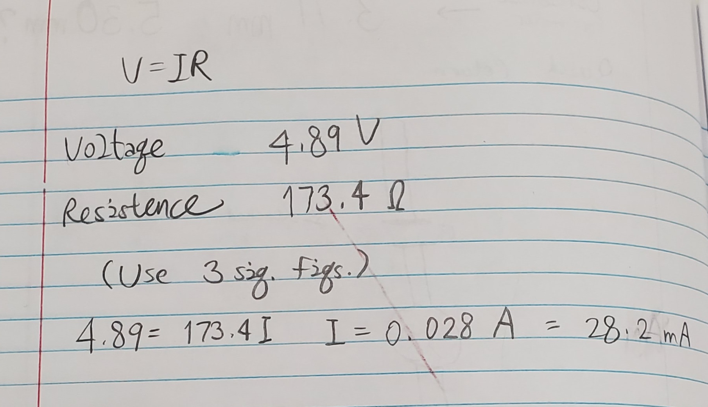

### Week 3: Electronics and Tools
This week, our professor and teacher assistants demonstrated to us how to use hot-glue guns, clamps, various saws, handheld drills, soldering irons, and drill presses. They instructed us to use a 5-volt motor to create a [kinetic sculpture](https://www.arttowngifts.com/Kinetic-Sculpture-Definition-s/1210.htm). It was only until the lab period after that class when I came up with the idea of a model of a string instrument's bow moving back and forth with the help of the rotating motor.
This was my old idea: 
##### This would have essentially been a miniature carousel that would have rotated like a turntable.
##### Another classmate had a similar idea, and I also thought this would be nearly impossible to pull off due to the fact that the motor rotates on a different axis.
The idea I went with was a motor spinning a quick-return mechanism to allow for a violin/viola bow to move back and forth, a linear motion. This was the sketch of how the mechanism worked:

I had to fit a disc into one of the sides of the motor that spins once powered; the caliper outputted the dimensions that are posted at the top of the sketch. I drilled a hole with a wide drill bit into the center of the cardboard disc to test whether or not the mechanism would work as intended. Had I had more time, I would have laser-cut a new disc with those measurements, accounting for kerfs, of course.
I used Fusion 360 and a laser cutter to create a [.dxf file](./beta_models/acryllic_object.dxf) of an acryllic rectangle that had two long holes, albeit narrow (0.98 mm) since I was using a small wire (1.38 mm wide) to serve as the disc's needed extension. This acryllic piece is supposed to only move back and forth like a non-digital metronome while the disc spins. I definitely overestimated the kerf (0.2 mm). I think the most ideal way to make the disc for the acryllic rectangle would have been via 3D printing, a task that is reserved for future weeks.
For the stand, I used a block of wood as the base and a wooden rod to attach everything. I sawed both of those objects. Sticking them together was harder than I thought; wood glue and hot glue were only so adhesive... Something unconventional I did was tying the motor to the wooden rod via wire. I thought that I might have needed to detatch the motor at a later date, so I didn't glue it onto the rod. I also attached a cardboard stand with hot glue so that the bow had a place to rest and move.
I made the bow out of wooden scraps, mostly glued together. For time's sake; although I did so for good measure, even though I thought that I didn't need to; I taped the front side of the bow where the tip is. Lots of people were using the glue guns and wood glue.
This is what everything looks like when the components are all put together:

##### Technically, the wire between the acryllic piece and the bow shouldn't exist. I wasn't sure how long the acryllic piece should have been, so I estimated that 7 cm was enough. I thought that if I made it too long, then the disc would not have supported its mass. I chose 2 cm as the width; maybe I could have narrowed it down a bit. I also was trying to fillet the piece and make round edges, but Fusion 360 didn't keep them upon projecting the 3D object back to a 2D one.
Ultimately, the model did not work as intended. The main thing of note is that the acryllic piece would spin around instead of back and forth. Here's a side-by-side comparison of what my model was able to accomplish and what the model's supposed to do:
Lastly, I had to calculate the current going through the circuit. With the multimeter, all I could measure was the resistance (One of the sensors had to touch a segment of the stripped wire that was next to the soldered part of the motor.) and the voltage. Fortunately, voltage = current × resistance, according to Ohm's law. I kept the calculations as precise as 3 significant figures since the voltage had the least at 4.89 V. The math is as follows:
